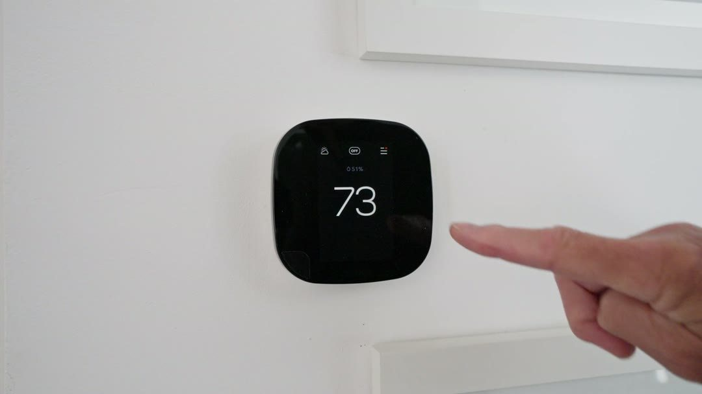
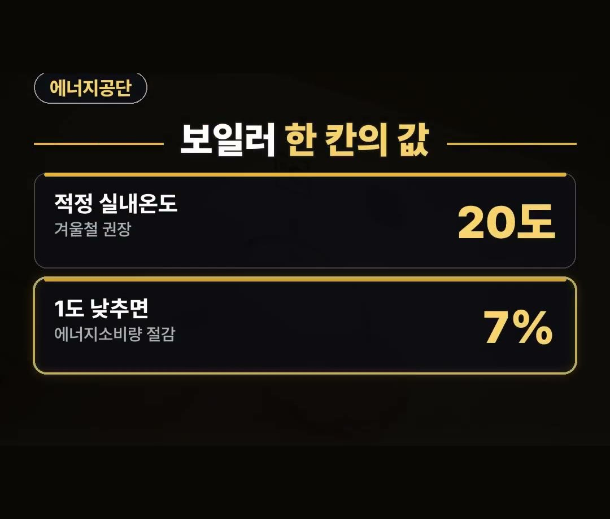
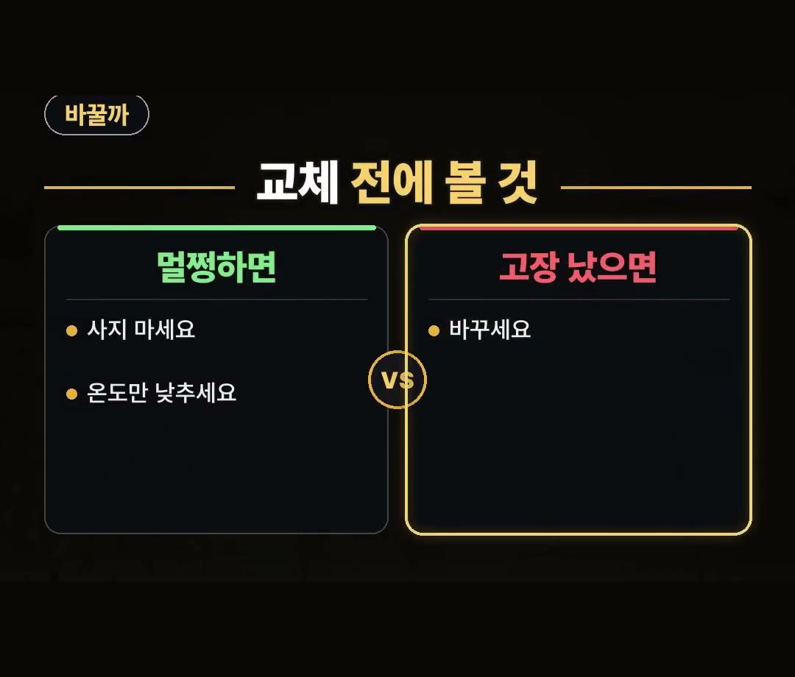
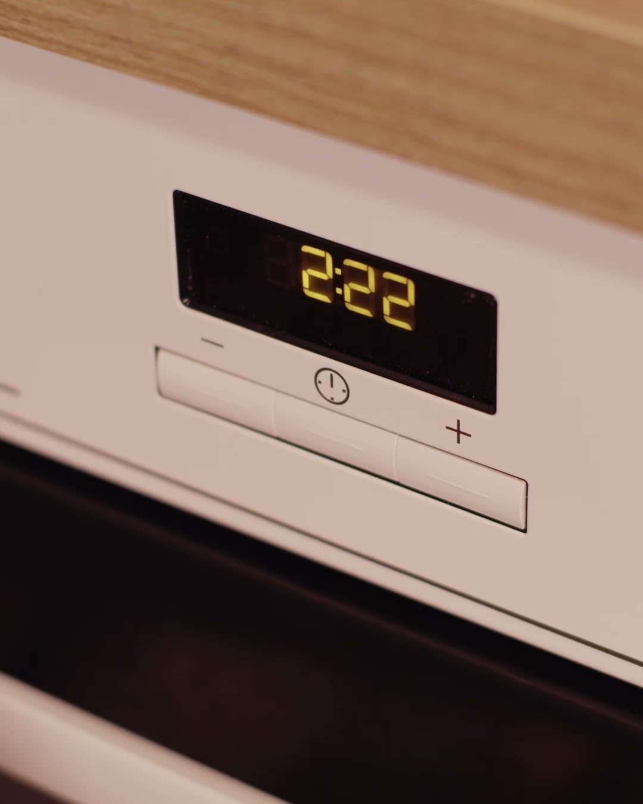
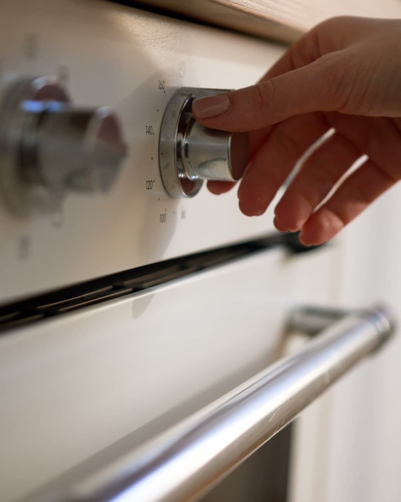

보일러 온도조절기 교체, 기종 모르면 못 쓰는 이유와 모델명 확인법
※ 이 글에는 제휴 링크가 포함되어 있으며, 링크를 통해 구매하시면 일정 수수료를 받을 수 있습니다. (가격은 같습니다)
※ 이 포스팅은 쿠팡 파트너스 활동의 일환으로, 이에 따른 일정액의 수수료를 제공받습니다.
찬 바람이 부는 저녁, 보일러를 켜려고 온도조절기 버튼을 눌렀는데 아무 반응이 없는 상황을 떠올려 보세요.
방은 점점 식어 가고, 급한 마음에 새 조절기부터 찾게 되죠.
이 글에서는 보일러 온도조절기 교체 전에 먼저 봐야 할 것, 그리고 굳이 바꾸지 않아도 되는 경우를 차근차근 정리해 드릴게요.
조절기를 사기 전에 지금 쓰는 조절기의 모델명부터 보세요.
그리고 한국에너지공단 난방비 절약 실천요령에 따르면 겨울철 적정 실내 난방온도는 20도, 1도 낮게 설정하면 에너지소비량을 7% 줄일 수 있어요.
이 두 가지만 기억하세요! 🔥
보일러 온도조절기 교체, 기종부터 보는 이유
온도조절기는 보일러와 짝을 이뤄 움직이는 장치예요.
그래서 기종이 맞지 않으면 사 놓고도 쓰지 못할 수 있어요.
새 조절기를 고르기 전에 지금 벽에 붙어 있는 조절기의 모델명을 먼저 적어 두는 게 좋아요.
- 지금 쓰는 조절기에 적힌 모델명 적어 두기
- 사려는 조절기가 그 모델, 그 보일러에 맞는지 상품 설명에서 맞춰 보기
이 두 가지만 먼저 해 두면 엉뚱한 조절기를 사서 다시 반품하는 일을 줄일 수 있어요.
특히 이사 온 집이라면 조절기와 보일러가 어떤 짝인지 모를 수 있어요.
이럴 때일수록 모델명을 먼저 적어 두면 상품 설명과 맞춰 보기 쉬워요.

보일러 온도조절기 교체 비용 아끼는 첫걸음
버튼이 안 눌리거나 고장이 났다면 바꿀 때예요.
하지만 조절기는 멀쩡한데 난방비가 걱정돼서 바꾸려는 거라면 사지 마세요.
새로 사기 전에 설정 온도부터 보는 게 먼저예요.
한국에너지공단 난방비 절약 실천요령에는 이렇게 나와 있어요.
- 겨울철 적정 실내 난방온도: 20도
- 1도 낮게 설정하면: 에너지소비량 7% 절감
조절기 숫자 한 칸이 곧 난방비라는 뜻이에요.
지금 조절기가 몇 도에 맞춰져 있는지부터 한 번 보세요.
한 번에 많이 내리기보다 한 칸씩 낮춰 보면서 지내기 괜찮은 온도를 찾아보는 것도 방법이에요.

바꿀 집, 그대로 둘 집
헷갈릴 때는 이렇게 나눠 보면 쉬워요.
- 멀쩡하면: 사지 마세요, 온도만 낮추세요
- 고장 났으면: 바꾸세요
조절기가 제대로 움직이는데 새 제품으로 바꾼다고 해서 설정 온도가 저절로 내려가지는 않아요.
난방비를 줄이는 건 결국 몇 도에 맞추느냐예요.
반대로 버튼이 눌리지 않아 온도를 바꿀 수 없다면, 그때는 교체를 생각할 때예요.

보일러 온도조절기 교체 방법, 같은 모델이라면
상품 후기에는 같은 모델이면 선만 이으면 된다는 말이 있어요.
지금 쓰는 조절기와 같은 모델을 고르면 연결이 단순해질 수 있다는 뜻이에요.
다만 모델이 다르거나 선 연결이 낯설다면 무리하지 말고 보일러 회사 서비스 센터에 문의하는 게 좋아요.
직접 바꾼다면 작업 전에 전원을 끄는 것도 잊지 마세요.

온수 온도로 조절하는 집이라면
실내 온도가 아니라 온수 온도로 난방을 조절하는 집도 있어요.
한국에너지공단 난방비 절약 실천요령에 따르면 이 경우 55도 안팎으로 설정해야 겨울철 실내 적정온도를 유지할 수 있어요.
조절기 화면에 방 온도 대신 물 온도가 보인다면 이쪽에 해당할 수 있으니, 내 조절기가 어떤 방식인지 먼저 보고 맞춰 보세요.
어느 방식인지 헷갈리면 조절기 화면과 설명서를 같이 보면 구분하기 쉬워요.

정리
- 보일러 온도조절기 교체 전에는 지금 조절기의 모델명부터 보세요
- 한국에너지공단 자료 기준 겨울철 적정 실내 난방온도는 20도, 1도 낮게 설정하면 에너지소비량 7% 절감이에요
- 온수 온도로 조절하는 집은 55도 안팎으로 맞추세요
링크는 아래에 모아 두었어요.
📌 2026년 11월 기준 정보예요. 가격은 시기에 따라 달라질 수 있어요.
사진·영상: Pexels (Alexander Mass, Diego Castro Calderon, Frank Schrader, K, Lesia Hnatiuk, Masha Glazova)